Overview
A battery-powered mobile robot that follows the magnetic field generated by a guide wire, with support for both automatic and manual modes. In automatic mode it tracks the wire, executes pre-programmed turns at intersections using IMU-based heading control, and detects obstacles with a VL53L0X time-of-flight sensor. In manual mode, a handheld IR remote with joystick provides direct motion control.
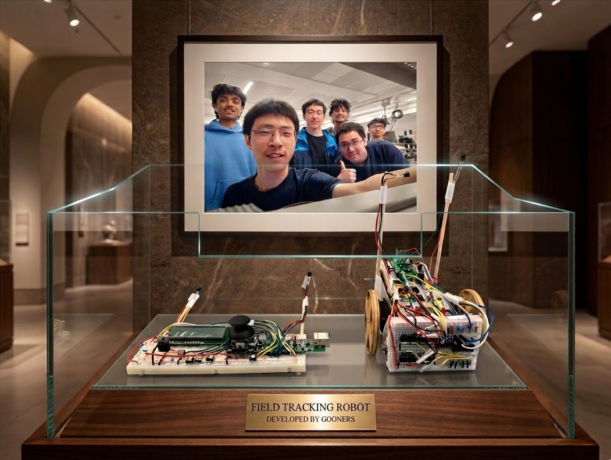
The system is built around three cooperating subsystems: an STM32L051 robot running bare-metal C firmware, an EFM8LB12 handheld controller with LCD menu and IR/Bluetooth interfaces, and a PyQt5 PC dashboard for real-time telemetry and waypoint path planning. I designed the custom bidirectional IR communication protocol (iterated 5 times to reach 27 fps throughput), the dual-FSM firmware architecture, and led the 6-person team.
Robot Hardware
The robot is centred on an STM32L051K8T6 (ARM Cortex-M0+, 32 MHz). A 9 V battery powers the MCU via LM7805 + MCP1700-3302E regulators, while a separate 4×AA pack drives the motors through optocoupler-isolated MOSFET H-bridges. Three tuned LC inductor circuits sense the guide wire’s 17.5 kHz magnetic field, amplified by LM358 op-amps and peak-detected into DC levels for the 12-bit ADC.
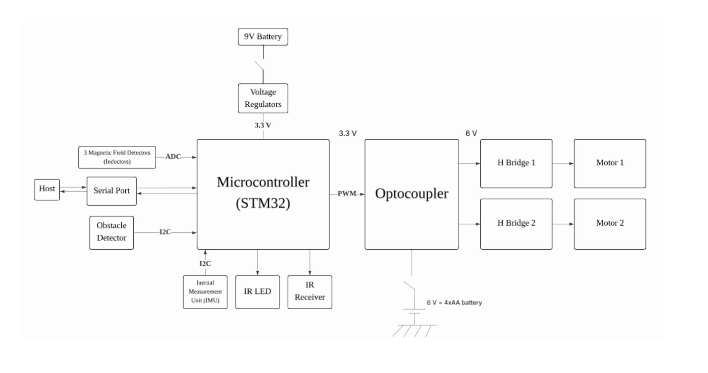
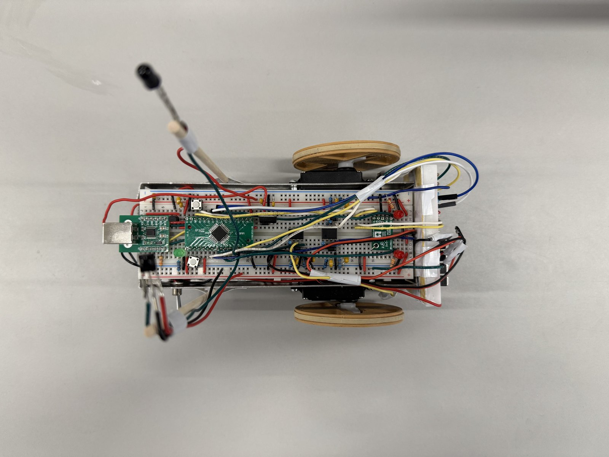
Magnetic Field Sensing
Three tuned LC inductors (left, front, right) pick up the 17.5 kHz guide wire field. Each signal is amplified by an LM358 (gain ≈ 20), rectified by a Schottky diode, and smoothed by an RC peak detector into a DC voltage proportional to field strength.
IR Communication
SFH4546 IR LED transmits and TSOP33338 demodulates 38 kHz modulated signals. Custom pulse-distance protocol: 28-bit frames (8-bit command, 16-bit value, 4-bit address) with half-duplex stop-and-wait ping-pong to eliminate co-located TX/RX crosstalk.
IMU & Obstacle Detection
IMU04A provides gyroscope data over I²C for heading estimation during turns. VL53L0X time-of-flight sensor measures forward distance — obstacle within 100 mm triggers immediate braking. Both share the I²C bus.
Motor Drive
Two DC motors driven by discrete PMOS-NMOS H-bridges. LTV846 optocouplers isolate control signals from motor noise. PWM at ~1 kHz with ±100 speed range, direction selected by diagonal transistor pair activation.
Controller Hardware
The handheld remote is built around an EFM8LB12F64 MCU. User input comes from four pushbuttons (start, pause, reset, transmit) and an analog joystick sampled by the 14-bit ADC. A 16×2 character LCD driven in 4-bit mode provides menu navigation and live status. The JDY-23 BLE module on UART1 creates a wireless bridge to the PC for waypoint upload and telemetry display.
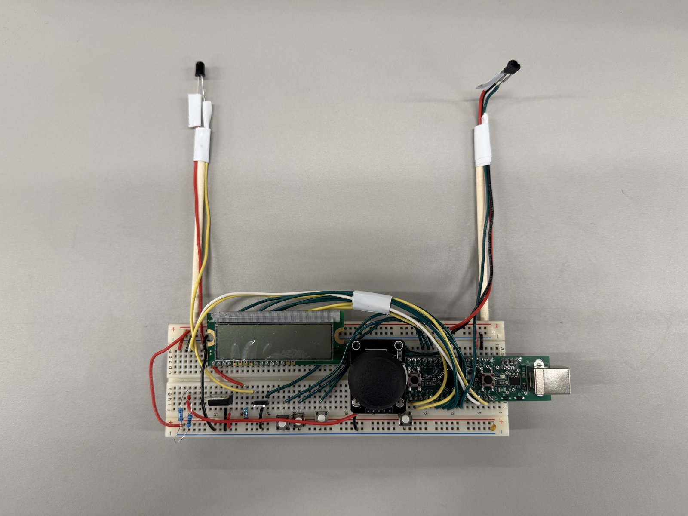
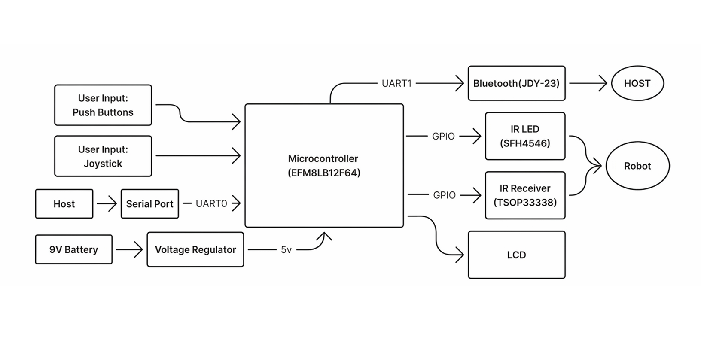
IR Communication Protocol
The bidirectional IR link between car and controller was the most iterated subsystem — 5 design revisions to achieve reliable, real-time communication between co-located TSOP33338 receivers and IR LED transmitters.
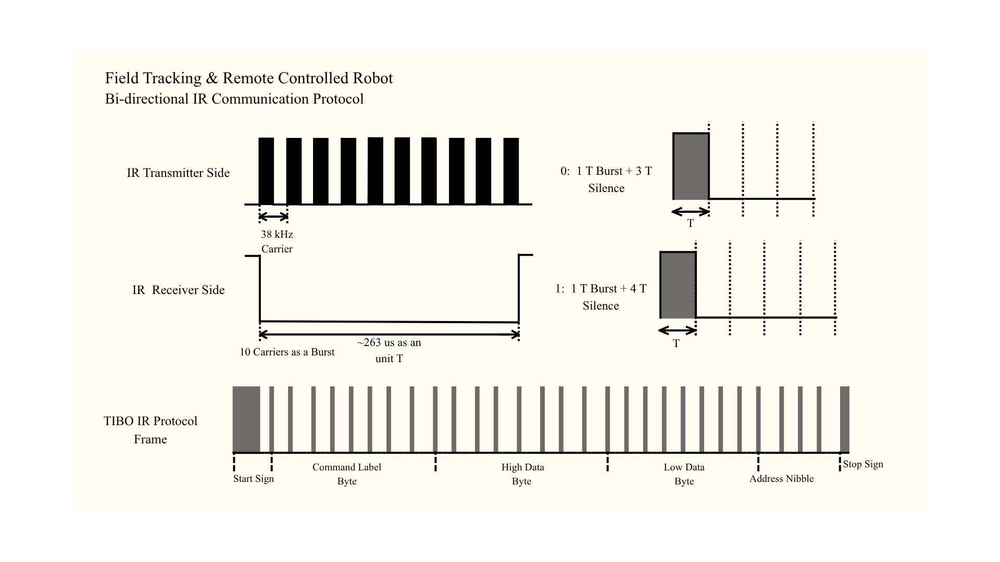
5 Iterations to 27 fps
v1: UART-Style Sampling
Mimicked UART: burst = 1, silence = 0. Dead on arrival — TSOP33338’s internal AGC squelches output during sustained bursts, requiring gaps to stay stable.
v2: Pulse-Distance Encoding
Fixed burst + variable silence per bit. But 1T+1T duty cycle exceeded 50%, triggering TSOP burst suppression. Extended to 1T+2T (0) / 1T+3T (1) to stay under AGC threshold.
v3: Optical Self-Interference
Co-located TX LED couples into local TSOP receiver — optical crosstalk corrupts frames. Added 100 ms silence gaps, but throughput dropped to ~7 fps. Unusable for real-time telemetry.
v4: Stop-and-Wait Ping-Pong
Architectural redesign: each side transmits one frame then waits for reply, eliminating all collision dead time. Added 16-entry FIFO TX queue, NOP keep-alive frames, and shrunk T from 263 µs to 184 µs. Result: 7 fps → 27 fps (4× improvement).
v5: Asymmetric Deadlock Recovery
Ping-pong introduced a classic distributed deadlock: if one side misses a frame, both wait forever. Solution: asymmetric timeout values — car and controller use different wait durations before autonomously re-initiating transmission, guaranteeing exactly one side breaks the silence first to re-synchronize the link without an explicit handshake.
Final Protocol Specification
Frame Format
28-bit pulse-distance encoded: 4-bit device address + 8-bit command + 16-bit payload. Start symbol: 2T burst + 2T space. Threshold decode at 3.5T (644 µs).
Hardware Timers
TIM22 generates 38 kHz carrier via PWM (PSC=0, ARR=420, CCR=210). TIM21 drives the TX state machine ISR every 184 µs (7 carrier cycles). EXTI edge-triggered RX with TIM6 µs timestamps. Zero CPU polling.
Link Layer
Half-duplex stop-and-wait with NOP keep-alive (cmd 41). 16-entry power-of-two FIFO ring buffer decouples application from link timing. 20 ms watchdog resets receiver FSM on mid-frame stalls.
Performance
~27 fps sustained bidirectional throughput. Streams 6 IMU registers + 2 motor power values for real-time 3D posture visualization on the PyQt5 dashboard.
Robot Software
The car firmware is implemented in bare-metal C on the STM32 (ARM Cortex-M0+, 64 KB Flash). The architecture is organised as loosely coupled driver and service blocks coordinated by a top-level dual finite state machine. Latency-sensitive work (IR timing, PWM) executes in interrupt context; the main loop handles application logic and inter-block data exchange.
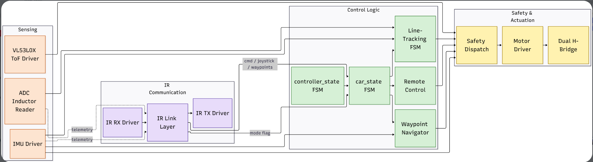
Dual FSM Architecture
The firmware is organised around two coupled state machines. The outer FSM, controller_state, manages the session lifecycle: CONFIG → DRIVE → PAUSE. The inner FSM, car_state, is evaluated only inside DRIVE and selects the active driving mode: FIELD_TRACKING, REMOTE, or PATH_TRACKING. Safety-critical braking (VL53L0X < 100 mm or roll-tip > ±50°) is applied at the dispatch layer, zeroing motors without altering either state variable so the car automatically resumes once the condition clears.
Field Tracking Mode
Line-tracking mode uses proportional-derivative steering control. The difference between left and right inductor readings forms the error signal, adjusting motor speeds to keep the robot centred. At intersections, a derivative-like term on the front inductor improves responsiveness. The FSM organises behaviour into: normal tracking → intersection detection → turn execution (IMU-based) → post-turn settling.
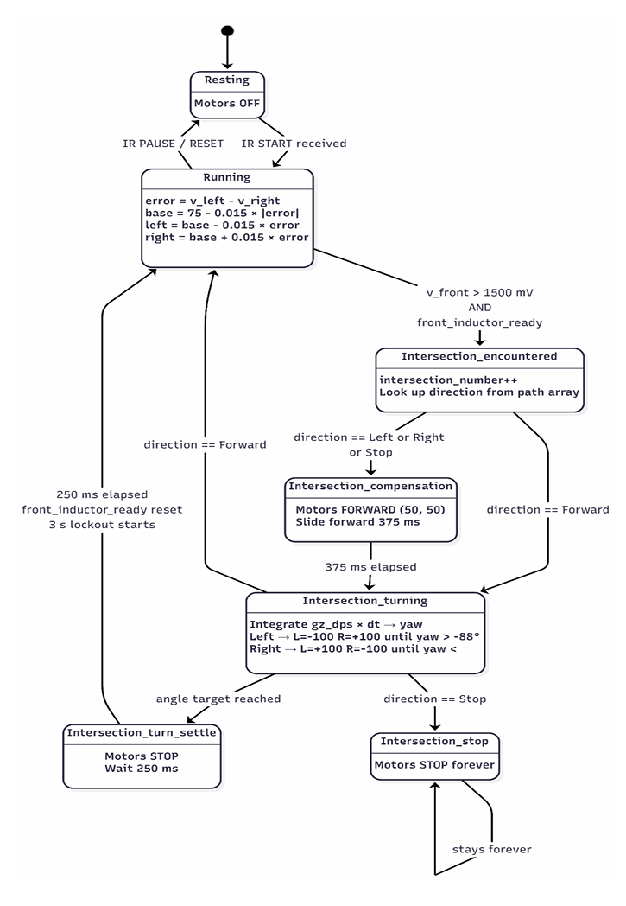
Waypoint Navigator Mode
The waypoint navigator handles point-to-point autonomous navigation. Waypoint lists (in X/Y cm) are sent from the PyQt5 GUI via Bluetooth to the remote, then relayed to the car over IR. For each segment, the navigator computes Euclidean distance and target bearing using gyro-integrated yaw as heading feedback. A proportional law corrects heading error; forward speed is reduced when remaining distance falls below 20 cm or heading error exceeds 60°.
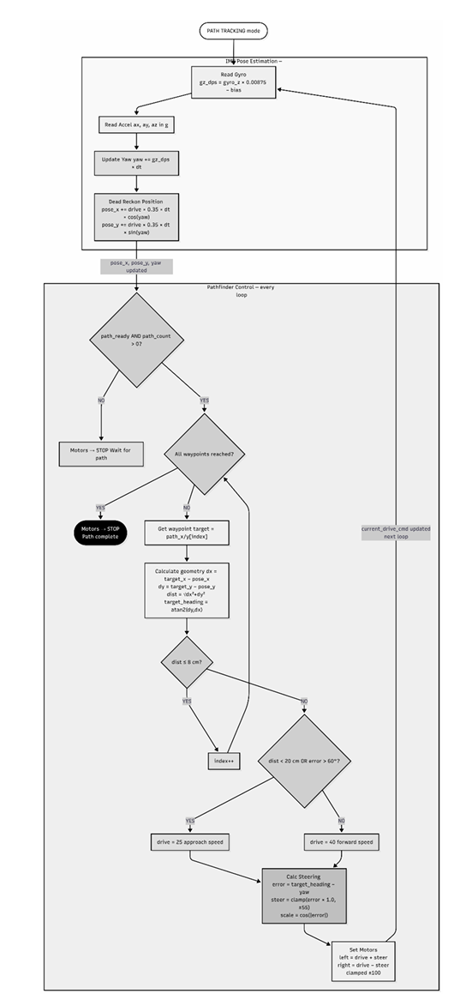
Controller Software
The remote controller firmware runs on the EFM8 MCU. An 18-state LCD FSM drives the menu system: mode selection (field/remote/pathfind), path selection (three presets or manual), and live status display. Joystick deflections and button presses are edge-detected using latches. In remote mode, joystick X/Y axes are transmitted as arcade-style mixer commands for intuitive control.
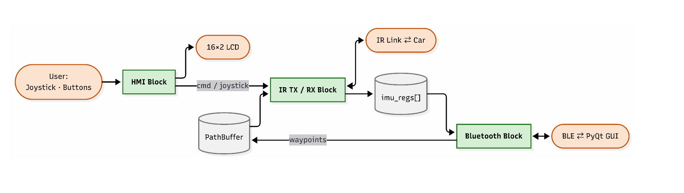
PyQt5 Dashboard
A Python GUI built with PyQt5 and the Bleak BLE library connects wirelessly to the controller via the JDY-23 module. It displays real-time telemetry (IMU registers, motor power levels) streamed at 2 Hz, and provides a click-to-place waypoint editor for autonomous path planning. Waypoints are transmitted as a PATH_BEGIN / point / PATH_END sequence over BLE → UART → IR to the car.
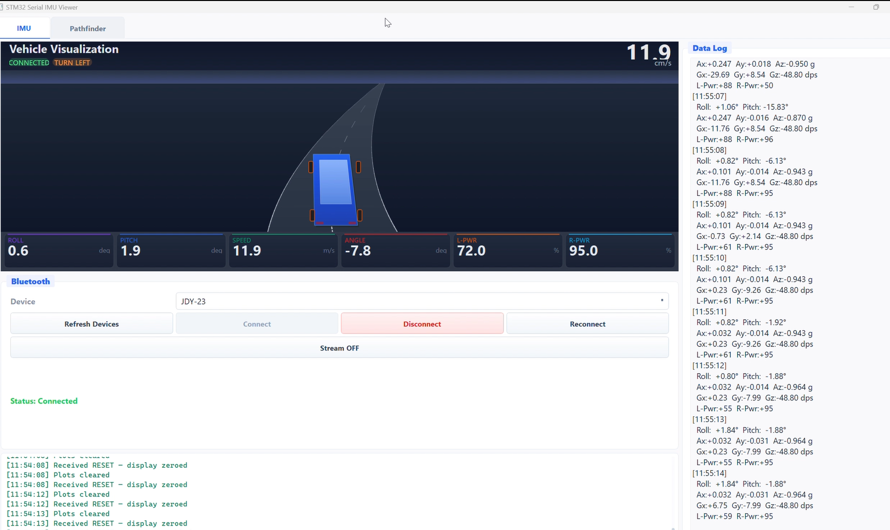
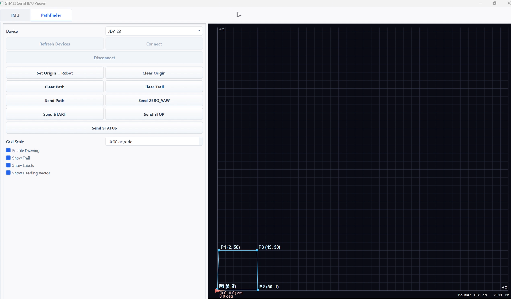